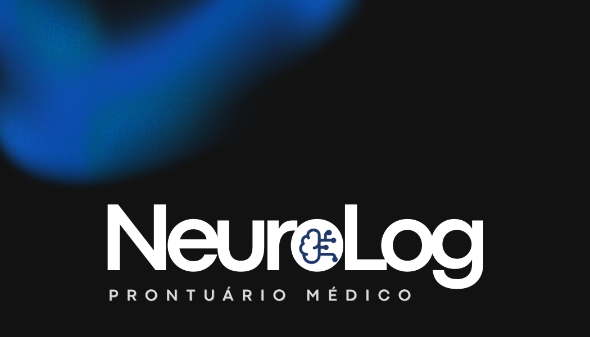

Bem-vindo ao Prontuário Eletrônico Inteligente

O Neurolog é um sistema moderno de prontuário eletrônico criado para facilitar a rotina de médicos e clínicas. Nosso foco principal é organizar de forma ágil e segura a rotina tanto do paciente, quanto dos médicos.
Benefícios do Sistema
Ao adotar o Neurolog, sua clínica ganha em eficiência e qualidade de atendimento. O que oferecemos:
- Segurança avançada com LGPD.
- Acesso instantâneo ao histórico médico de qualquer dispositivo.
- Integração com Memed.
Como implantar na sua clínica?
O processo de implantação é simples e dividido nas seguintes etapas:
- Agendamento de uma demonstração inicial com nossos consultores.
- Migração segura do seu banco de dados atual para a nossa nuvem.
- Treinamento completo para toda a equipe médica e recepção.
Acesse nosso Prontuário Eletrônico
Conheça já:
Link do Neurolog